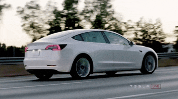
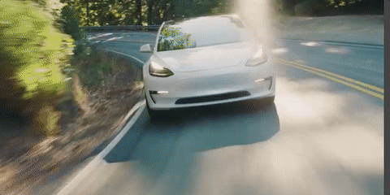

Tesla
Tesla Model X plaid
Tri Motor All-Wheel Drive platform with torque vectoring features three independent motors, each with a carbon fiber-sleeved rotor that maintains peak power output all the way to top speed.
Peak power
1,020hp
Tesla Model X
Model X platforms unite powertrain and battery technologies for unrivaled performance, range and efficiency. New module and pack thermal architecture allows faster charging and gives you more power and endurance in all conditions. With the lowest drag coefficient of any SUV, Model X is built for speed and range. Refined aerodynamic elements work together with new wheels and tires to help you travel farther, with sharper handling and better ride comfort.
Peak power
1,200hp
Cybertruck

RUGGED STRENGTH With the ability to pull near infinite mass and a towing capability of over 14,000 pounds, Cybertruck can perform in almost any extreme situation with ease.